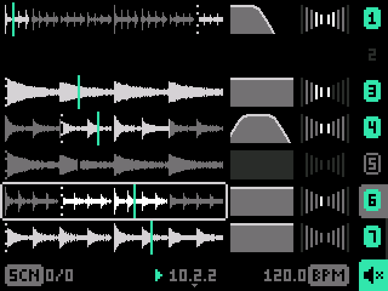
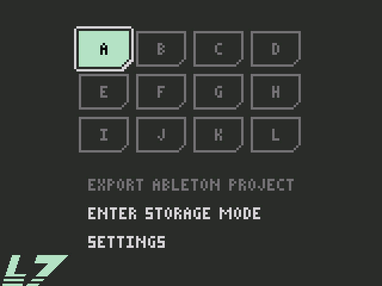

A 7-track looper for the Dirtywave M8. Quick user's guide.
L7 replaces the M8's own firmware with a live looper. You record loops from the M8's line input onto 7 tracks, shape each one (range, filter, volume, balance), and store combinations as scenes. You keep up to 12 projects on the SD card, and you can export any of them as an Ableton Live set.
The M8's keys are named on the device: the arrows, SHIFT, START, B (OPT), A (EDIT) and the power key. This guide uses those names.

Track rows: tracks 1 (top) to 7. Each row has three cells and a button.
Waveform: the recorded loop; the bright part is the range that plays, the line is the playhead.
Filter: the response of the track's highpass and lowpass filter.
Volume: the track's level and balance, with a level meter.
Button (right): the track number, filled while the track plays, outlined while it's muted, dim while it's empty.
Status row (bottom): the scene (SCN 3/7), the clock (bar.beat.step), the tempo, and the action button, which always shows what A will do.
The selected cell has a light frame. Move it with the arrows. The colour accents follow the loaded project's colour.
| Keys | What they do |
|---|---|
| Arrows | Move the selection: UP/DOWN between rows, LEFT/RIGHT between cells. |
| A on a track | Empty track: record, press again to stop. Track with a clip: mute / unmute. |
| B held + arrows | Adjust the selected cell (see below). |
| B twice | Reset the cell: whole loop, filter open, volume at unity and balance centred; on the clock cell, master volume back to 100%. |
| SHIFT + A | Cut the track's clip to the clipboard, or paste it onto an empty track. On a recording track: cancel the recording. |
| SHIFT + LEFT/RIGHT | Put the previous / next recording on the card on the track (in name order). |
| SHIFT + UP/DOWN | Next / previous scene. |
| START | Play from 1.1.1 / stop. |
| SHIFT + START | Restart from 1.1.1, also while playing. |
| B + A on an empty track | Resample: record what you hear onto this track. |
| DOWN on the status row | Open the menu (projects, export, storage mode), once you let go. The small arrow at the bottom of the screen points the way. |
| Power key (hold) | Switch off. Everything is saved first. |
Pressing A on another empty track while one records stops the first and queues the next one to start exactly where the first ends. In a new, empty project a metronome click plays until the first loop is complete.
| Cell | LEFT / RIGHT | UP / DOWN |
|---|---|---|
| Waveform | Move the range's start. Tap twice to move it by its own length. | Make the range longer / shorter (¼ bar up to the whole loop). Tap twice for halves and doubles. |
| Filter | Move the band | Widen / narrow the band |
| Volume | Balance | Volume (off, then steps of 7.5 dB) |
| Scene cell | Next / previous scene | |
| Clock cell | Master volume, one step per press (one volume for all projects) | |
| Tempo cell | ±0.1 BPM | ±1 BPM (30–240 BPM) |
Changing the tempo re-pitches the loops, like a turntable. The tempo belongs to the project.
A scene is a snapshot of all 7 tracks: which clip each plays, its range, mute, filter, volume and balance. Whatever you change updates the current scene as you go; there is no save step.
With a clip playing unmuted, select an empty track and press B + A. L7 records everything you hear (tracks and input, but not the master volume) from the next bar line, like a normal recording. When it's saved, it moves to a new scene right after the current one, on the same track, and the clips that were muted come along, still muted. The action button shows a record dot with a plus while resampling is available.

Open the menu by pressing DOWN on the status row, the bottom one. The clock keeps running.
Cards A–L: the 12 project slots. A filled card is the loaded project, an outlined one has a project, a grey one is empty.
The list: export to Ableton, and storage mode.
| On a card | What it does |
|---|---|
| A, B or START | Load that project (on an empty slot: start a new one) and go back to the looper. While playing, it comes in on the next bar line. |
| SHIFT + A | Cut the project to the project clipboard, or paste it into an empty slot. |
Each project keeps its own scenes and tempo; new projects start with the tempo you last set by hand. The master volume is one for all projects. Opening the menu with a project that has no clips at all deletes that project.
Load the project, open the menu and choose EXPORT ABLETON PROJECT. The clock stops and L7 writes a Live 11 project to the card, in /L7/EXPORTS/L7 A001 Project/ (the project's letter, then the next free number). The label then reads SAVED AS L7 A001, and the button stays off until you close the menu.
In the menu, choose ENTER STORAGE MODE, then connect the M8 to your computer with a USB cable. The SD card mounts as a normal drive. The clock stops, and the screen shows the connection state.
When you're done, eject the drive on the computer, or press START on the M8. L7 reads the card again and you're back in the menu.
| Folder | Contents |
|---|---|
/L7/SAMPLES | Every recording, as a WAV file named A30012.wav: the project letter, the track number (1–7) and a number. |
/L7/PROJECTS | The projects, A.L7P to L.L7P. An empty slot has no file. |
/L7/EXPORTS | The Ableton projects you exported. |
/L7/DATA | Everything else L7 needs, including about 180 MB of space kept ready for new recordings. |
Recordings stay on the card even when no project uses them any more.